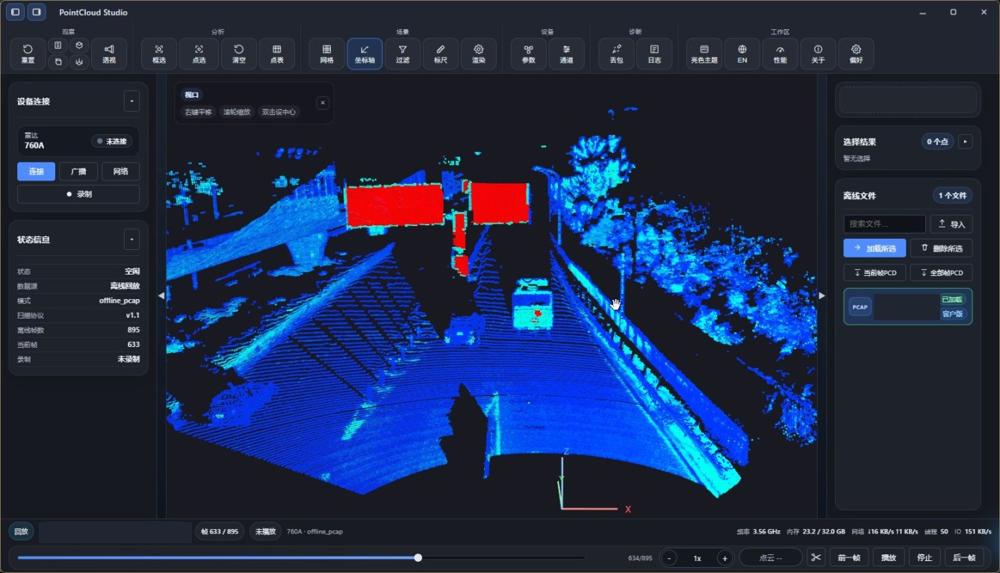
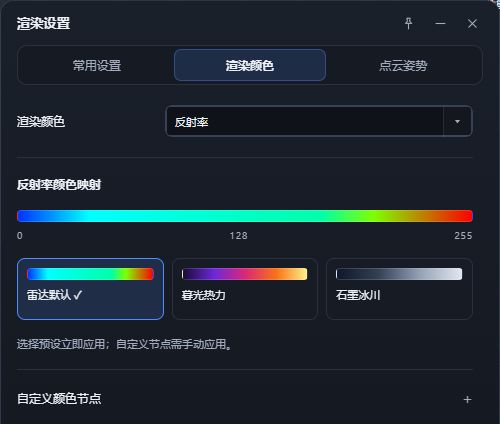

Windows x86_64
2026-11-116.42 MB · setup.exe
雷达点云采集与回放工具。接入雷达、导入 PCAP、导出点云，安装包从这里直接取。
不需要账号，也不需要登录。文件由 CrabNebula 的 CDN 直接发出，点开即开始下载。
文件名标记为未签名，安装前请确认已完成 APK 签名。
macOS 暂无已发布的安装包
从 PCAP 回放到反射率着色，直接查看软件的实际运行画面。

截图取自软件实际运行；本地文件名与路径已遮挡。

按系统和处理器架构筛选，每一行是一个可下载的文件，按发布时间倒序。点击版本号查看该版本的完整更新说明。Linux 的 x86_64 与 ARM64 分开列出；稳定版适合日常使用，预览版用于体验新功能。
| 版本 | 更新要点 | 文件 | 大小 | 发布日期 | 下载 |
|---|---|---|---|---|---|
| 0.3.28 稳定版 | 工具窗独立显示与界面精简 | Windows x86_64PointCloud Studio_0.3.28_x64-setup.exe | 6.42 MB | 2026-11-11 | 下载 |
| 0.3.28 稳定版 | 工具窗独立显示与界面精简 | Linux ARM64PointCloud Studio_0.3.28_arm64.deb | 30.7 MB | 2026-11-11 | 下载 |
| 0.3.28 稳定版 | 工具窗独立显示与界面精简 | Linux ARM64PointCloud Studio_0.3.28_aarch64.AppImage | 101.3 MB | 2026-11-11 | 下载 |
| 0.3.28 稳定版 | 工具窗独立显示与界面精简 | Linux ARM64PointCloud Studio-0.3.28-1.aarch64.rpm | 30.7 MB | 2026-11-11 | 下载 |
| 0.3.28 稳定版 | 工具窗独立显示与界面精简 | Android APKpointcloud-studio-0.3.28-universal-release-unsigned.apk | 160.8 MB | 2026-11-11 | 下载 |
| 0.3.28 稳定版 | 工具窗独立显示与界面精简 | Linux x86_64PointCloud Studio_0.3.28_amd64.deb | 35.1 MB | 2026-11-11 | 下载 |
| 0.3.28 稳定版 | 工具窗独立显示与界面精简 | Linux x86_64PointCloud Studio_0.3.28_amd64.AppImage | 106.9 MB | 2026-11-11 | 下载 |
| 0.3.28 稳定版 | 工具窗独立显示与界面精简 | Linux x86_64PointCloud Studio-0.3.28-1.x86_64.rpm | 35.1 MB | 2026-11-11 | 下载 |
| 0.3.27 稳定版 | 软件渲染检测与显卡驱动提示 | Linux x86_64PointCloud Studio_0.3.27_amd64.deb | 35.0 MB | 2026-11-05 | 下载 |
| 0.3.27 稳定版 | 软件渲染检测与显卡驱动提示 | Linux x86_64PointCloud Studio_0.3.27_amd64.AppImage | 106.7 MB | 2026-11-05 | 下载 |
| 0.3.26 稳定版 | 多雷达 PCAP 分流与切换显示 | Windows x86_64PointCloud Studio_0.3.26_x64-setup.exe | 6.35 MB | 2026-11-04 | 下载 |
| 0.3.25 稳定版 | 763C 丢包统计与缺口定位修正 | Windows x86_64PointCloud Studio_0.3.25_x64-setup.exe | 6.31 MB | 2026-11-02 | 下载 |
| 0.3.24 稳定版 | 在线导出当前帧 PCD 与收起窗体单行显示 | Windows x86_64PointCloud Studio_0.3.24_x64-setup.exe | 6.32 MB | 2026-10-28 | 下载 |
| 0.3.23-alpha.9 预览版 | 录制文件夹设置与 763C 点云姿态旋转 | Windows x86_64PointCloud Studio_0.3.23-alpha.9_x64-setup.exe | 6.31 MB | 2026-10-27 | 下载 |
| 0.3.23-alpha.8 预览版 | 763C 补偿角接入与点云坐标修正 | Windows x86_64PointCloud Studio_0.3.23-alpha.8_x64-setup.exe | 6.30 MB | 2026-10-27 | 下载 |
| 0.3.23-alpha.7 预览版 | Android 版本、手机触控与硬件温度 | Windows x86_64PointCloud Studio_0.3.23-alpha.7_x64-setup.exe | 6.30 MB | 2026-10-27 | 下载 |
| 0.3.23-alpha.5 预览版 | 角选按槽位展开与选择结果收起 | Windows x86_64PointCloud Studio_0.3.23-alpha.5_x64-setup.exe | 6.14 MB | 2026-10-20 | 下载 |
| 0.3.23-alpha.4 预览版 | 性能监控、渲染后端切换与 UDP 诊断 | Windows x86_64PointCloud Studio_0.3.23-alpha.4_x64-setup.exe | 6.15 MB | 2026-10-19 | 下载 |
| 0.3.22 稳定版 | 关闭视场的点云保持与网络参数限制 | Windows x86_64PointCloud Studio_0.3.22_x64-setup.exe | 5.70 MB | 2026-10-12 | 下载 |
| 0.3.21 稳定版 | 点云姿势旋转、丢包显示 | Windows x86_64PointCloud Studio_0.3.21_x64-setup.exe | 5.69 MB | 2026-10-12 | 下载 |
| 0.3.20 稳定版 | 更新通道、下载进度与下拉交互修复 | Windows x86_64PointCloud Studio_0.3.20_x64-setup.exe | 5.67 MB | 2026-10-10 | 下载 |
| 0.3.20-alpha.0 预览版 | 更新通道、下载进度与下拉交互修复 | Windows x86_64PointCloud Studio_0.3.20-alpha.0_x64-setup.exe | 5.67 MB | 2026-10-10 | 下载 |
| 0.3.19 稳定版 | 点表时间戳与录制、回放优化 | Windows x86_64PointCloud Studio_0.3.19_x64-setup.exe | 5.67 MB | 2026-10-09 | 下载 |
| 0.3.19 预览版 | 点表时间戳与录制、回放优化 | Windows x86_64PointCloud Studio_0.3.19_x64-setup.exe | 5.67 MB | 2026-10-09 | 下载 |
| 0.3.18 稳定版 | 丢包检测 HTML 报告导出 | Windows x86_64PointCloud Studio_0.3.18_x64-setup.exe | 5.55 MB | 2026-09-28 | 下载 |
| 0.3.17 稳定版 | PTP 校时查询与设置接入 | Windows x86_64PointCloud Studio_0.3.17_x64-setup.exe | 5.51 MB | 2026-09-24 | 下载 |
| 0.3.16 稳定版 | 760B 网络参数主从模式（PHY）支持 | Windows x86_64PointCloud Studio_0.3.16_x64-setup.exe | 5.50 MB | 2026-09-22 | 下载 |
| 0.3.15 稳定版 | 正交视图切换、网格浮点间距与 763C 解析修复 | Windows x86_64PointCloud Studio_0.3.15_x64-setup.exe | 5.50 MB | 2026-09-18 | 下载 |
| 0.3.14 稳定版 | WGPU 渲染调度与动态点云闪烁修复 | Windows x86_64PointCloud Studio_0.3.14_x64-setup.exe | 5.49 MB | 2026-09-17 | 下载 |
| 0.3.13 稳定版 | 队列丢包日志聚合与诊断改进 | Windows x86_64PointCloud Studio_0.3.13_x64-setup.exe | 5.49 MB | 2026-09-14 | 下载 |
| 0.3.12 稳定版 | 点云角度、线号映射与通道显示修复 | Windows x86_64PointCloud Studio_0.3.12_x64-setup.exe | 5.49 MB | 2026-09-09 | 下载 |
| 0.3.11 稳定版 | 763C 垂直角度标定优化 | Windows x86_64PointCloud Studio_0.3.11_x64-setup.exe | 5.48 MB | 2026-09-03 | 下载 |
| 0.3.9 稳定版 | 763C 近距水平补点与相位修复 | Windows x86_64PointCloud Studio_0.3.9_x64-setup.exe | 5.48 MB | 2026-08-11 | 下载 |
共 33 个安装包；窄屏下按文件竖排。
先选系统，再确认 Linux 的处理器架构。Android 使用 APK 安装；下载前请留意安装包的签名状态。
双击 PointCloud Studio_<版本>_x64-setup.exe，按提示装到当前用户目录即可，不需要管理员权限。
如果 SmartScreen 提示「Windows 已保护你的电脑」，点「更多信息」，再点「仍要运行」。
在终端运行 uname -m：结果为 x86_64 时选 x86_64（文件名也可能写 amd64），结果为 aarch64 或 arm64 时选 ARM64。两种架构的安装包不能混用。
适用于 Ubuntu、Debian 及其衍生发行版。进入下载目录，将下方文件名替换为实际下载的 deb 文件名；包管理器会安装所需的系统依赖。
sudo apt install "./PointCloud Studio_<版本>_<amd64或arm64>.deb"
单文件运行，仍需系统与架构兼容。将文件名替换为实际下载的 AppImage 文件名，再赋予可执行权限并启动。
chmod +x "./PointCloud Studio_<版本>_<架构>.AppImage"
"./PointCloud Studio_<版本>_<架构>.AppImage"
适用于 Fedora、openEuler 等使用 RPM 的发行版。使用系统包管理器打开 rpm 文件，或在终端执行安装；同样需要选择与系统匹配的架构。
在手机上下载 APK 后打开。系统询问安装来源时，为本次使用的浏览器或文件管理器允许「安装未知应用」，再按提示安装。
APK 必须经过签名。文件名带 unsigned 的安装包需要先由发布者完成签名；允许安装来源不会解决未签名或签名不一致的问题。
点云渲染走 GPU。Ubuntu 上如果没装驱动，画面由 CPU 模拟，会非常卡；0.3.27 起程序会自己识别并提示。